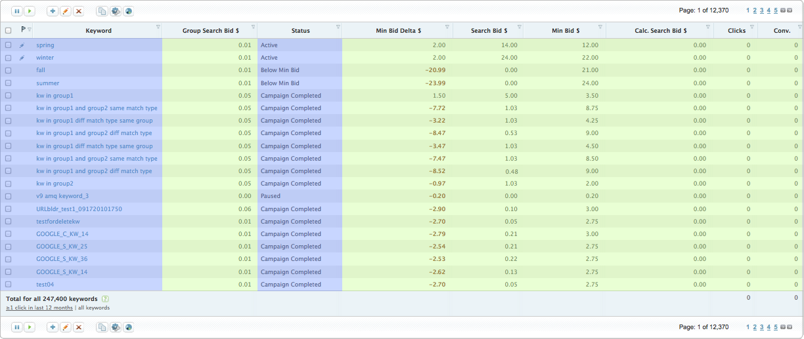

How do you deal with large amounts of data in a web application UI?
Datagrids at Marin
Customers deal with data in two ways:
Search & Analytics
Search
"Show me all my keywords containing the word 'shoes' in the Holiday Campaign."
Analtyics
"Which keywords with more than five thousand impressions have the highest revenue for the last seven days?"
Two Approaches to Data
How do we make the best of both worlds?
A New Datagrid
We need to lazy load rows AND columns
